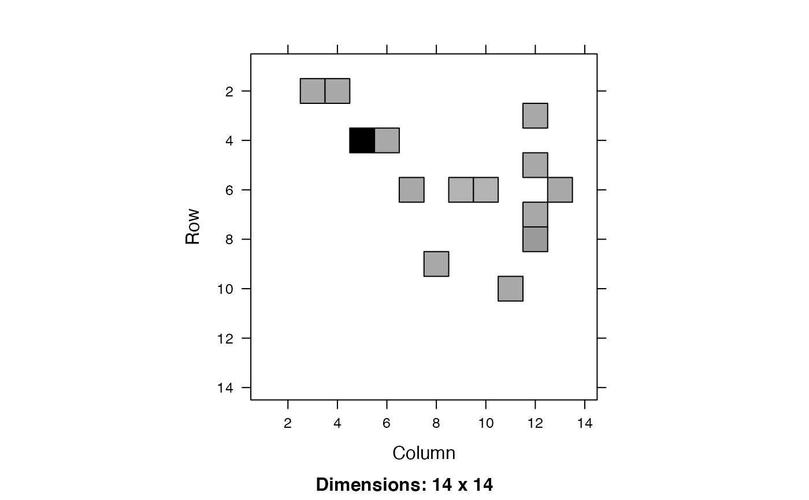

Defines rates (per day) of flow from compartment i
(row) to compartment j (column).
make_ratemat(
state,
params,
do_ICU = TRUE,
sparse = FALSE,
symbols = FALSE,
indices = FALSE
)named vector of states
named vector of parameters
include additional health utilization compartments
return sparse matrix?
return character (symbol) form? (FIXME: call adjust_symbols here rather than in show_ratemat()?)
return indices for lower-level stuff?
matrix of (daily) transition rates
The rates are as follows:
\( S to E: - (\beta_0 / N) S (C_a I_a + C_p I_p + (1-iso_m)C_m I_m + (1-iso_s)C_s I_s) \) \( E to I_a: \) \( E to I_p: \) \( ... \)
See read_params for parameter definitions.
Base version matches structure of Stanford/Georgia models
flow diagram: see http://covid-measures.stanford.edu/ 'model details' tab
or ../pix/model_schematic.png
parameter definitions: see params_CI_base.csv, params_ICU_diffs.csv
params <- read_params("ICU1.csv")
state <- make_state(params[["N"]],E0=params[["E0"]], use_eigvec=FALSE)
M <- make_ratemat(state,params)
if (require(Matrix)) {
image(Matrix(M))
}

make_ratemat(state,params,symbols=TRUE)
#> to
#> from S E Ia
#> S "0" "sum(beta_array * state[names(beta_array)])" "0"
#> E "0" "0" "alpha * sigma"
#> Ia "0" "0" "0"
#> Ip "0" "0" "0"
#> Im "0" "0" "0"
#> Is "0" "0" "0"
#> H "0" "0" "0"
#> H2 "0" "0" "0"
#> ICUs "0" "0" "0"
#> ICUd "0" "0" "0"
#> D "0" "0" "0"
#> R "0" "0" "0"
#> X "0" "0" "0"
#> V "0" "0" "0"
#> to
#> from Ip Im Is
#> S "0" "0" "0"
#> E "(1 - alpha) * sigma" "0" "0"
#> Ia "0" "0" "0"
#> Ip "0" "mu * gamma_p" "(1 - mu) * gamma_p"
#> Im "0" "0" "0"
#> Is "0" "0" "0"
#> H "0" "0" "0"
#> H2 "0" "0" "0"
#> ICUs "0" "0" "0"
#> ICUd "0" "0" "0"
#> D "0" "0" "0"
#> R "0" "0" "0"
#> X "0" "0" "0"
#> V "0" "0" "0"
#> to
#> from H H2
#> S "0" "0"
#> E "0" "0"
#> Ia "0" "0"
#> Ip "0" "0"
#> Im "0" "0"
#> Is "(1 - nonhosp_mort) * phi1 * gamma_s" "0"
#> H "0" "0"
#> H2 "0" "0"
#> ICUs "0" "psi1"
#> ICUd "0" "0"
#> D "0" "0"
#> R "0" "0"
#> X "0" "0"
#> V "0" "0"
#> to
#> from ICUs
#> S "0"
#> E "0"
#> Ia "0"
#> Ip "0"
#> Im "0"
#> Is "(1 - nonhosp_mort) * (1 - phi1) * (1 - phi2) * gamma_s"
#> H "0"
#> H2 "0"
#> ICUs "0"
#> ICUd "0"
#> D "0"
#> R "0"
#> X "0"
#> V "0"
#> to
#> from ICUd
#> S "0"
#> E "0"
#> Ia "0"
#> Ip "0"
#> Im "0"
#> Is "(1 - nonhosp_mort) * (1 - phi1) * phi2 * gamma_s"
#> H "0"
#> H2 "0"
#> ICUs "0"
#> ICUd "0"
#> D "0"
#> R "0"
#> X "0"
#> V "0"
#> to
#> from D R X V
#> S "0" "0" "0" "0"
#> E "0" "0" "0" "0"
#> Ia "0" "gamma_a" "0" "0"
#> Ip "0" "0" "0" "0"
#> Im "0" "gamma_m" "0" "0"
#> Is "nonhosp_mort * gamma_s" "0" "M[pfun(\"Is\", \"H\", M)]" "0"
#> H "0" "rho" "0" "0"
#> H2 "0" "psi3" "0" "0"
#> ICUs "0" "0" "0" "0"
#> ICUd "psi2" "0" "0" "0"
#> D "0" "0" "0" "0"
#> R "0" "0" "0" "0"
#> X "0" "0" "0" "0"
#> V "0" "0" "0" "0"